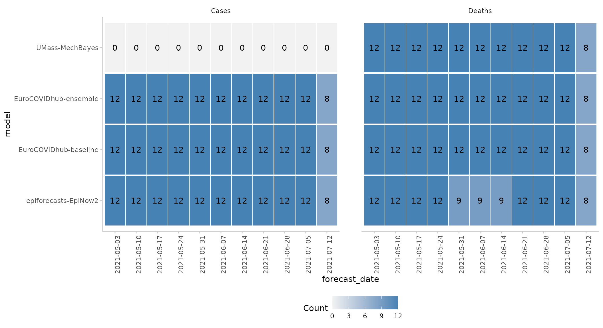
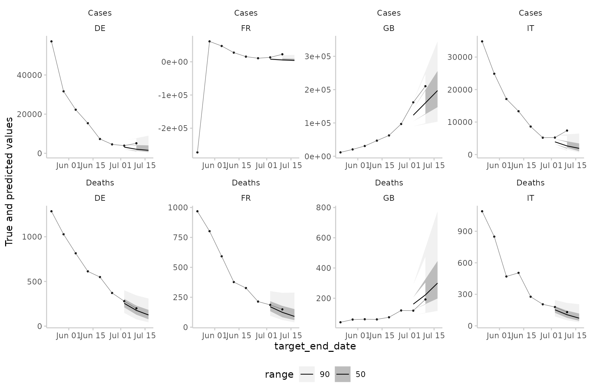
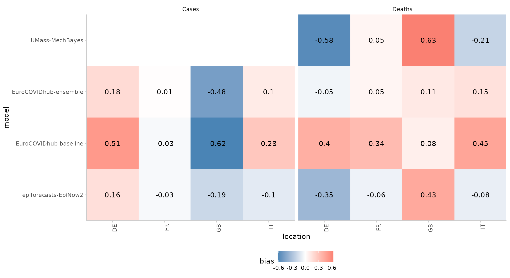
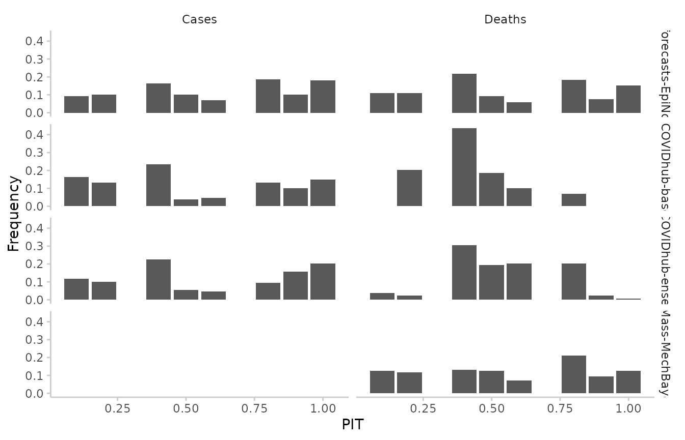
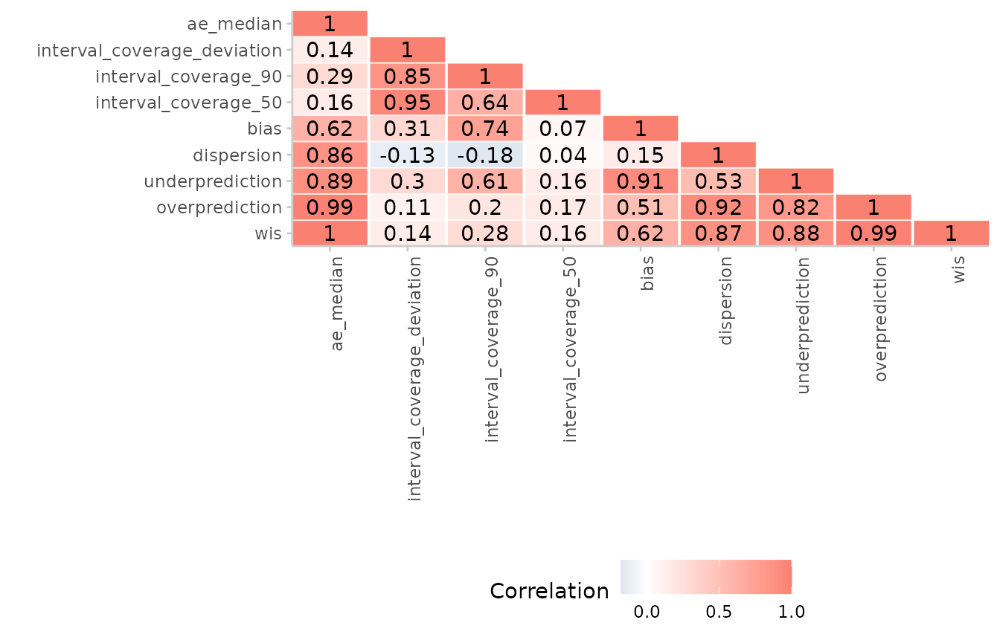

The scoringutils package provides a collection of
metrics and proper scoring rules that make it simple to score
probabilistic forecasts against observed values. You can find more
information in the paper Evaluating Forecasts with
scoringutils in R as well as the Metrics-Vignette
and the Scoring
forecasts directly Vignette.
The scoringutils package offers convenient automated
forecast evaluation in a data.table format (using the
function score()), but also provides experienced users with
a set of reliable lower-level scoring metrics operating on
vectors/matriced they can build upon in other applications. In addition
it implements a wide range of flexible plots that are able to cover many
use cases.
The goal of this package is to provide a tested and reliable
collection of metrics that can be used for scoring probabilistic
forecasts (forecasts with a full predictive distribution, rather than
point forecasts). It has a much stronger focus on convenience than
e.g. the scoringRules package, which provides a
comprehensive collection of proper scoring rules (also used in
scoringutils). In contrast to other packages,
scoringutils offers functionality to automatically evaluate
forecasts, to visualise scores and to obtain relative scores between
models.
Predictions can be handled in various formats:
scoringutils can handle probabilistic forecasts in either a
sample based or a quantile based format. For more detail on the expected
input formats please see below. True values can be integer, continuous
or binary.
Input formats
Most of the time, the score() function will be able to
do the entire evaluation for you. All you need to do is to pass in a
data.frame with the appropriate columns. Which columns are
required depends on the format the forecasts come in. The forecast
format can either be based on quantiles (see
example_quantile for the expected format), based on
predictive samples (see example_continuous and
example_integer for the expected format in each case) or in
a binary format. The following table gives an overview (pairwise
comparisons will be explained in more detail below):
| Format | Required columns |
|---|---|
| quantile-based | ‘observed’, ‘predicted’, ‘quantile’ |
| sample-based | ‘observed’, ‘predicted’, ‘sample’ |
| binary | ‘observed’, ‘predicted’ |
| pairwise-comparisons | additionally a column ‘model’ |
Additional columns may be present to indicate a grouping of
forecasts. For example, we could have forecasts made by different models
in various locations at different time points, each for several weeks
into the future. scoringutils automatically tries to
determine the unit of a single forecast, i.e. the combination
of existing columns that are able to uniquely identify a single
forecast. It uses all existing columns for this, which can sometimes
lead to issues. We therefore recommend using the function
set_forecast_unit() to determine the forecast unit
manually. The function simply drops unneeded columns, while making sure
that some necessary, ‘protected columns’ like “predicted” or “observed”
are retained.
colnames(example_quantile)
#> [1] "location" "target_end_date" "target_type" "observed"
#> [5] "location_name" "forecast_date" "quantile_level" "predicted"
#> [9] "model" "horizon"
set_forecast_unit(
example_quantile,
c("location", "target_end_date", "target_type", "horizon", "model")
) %>%
colnames()
#> [1] "observed" "quantile_level" "predicted" "location"
#> [5] "target_end_date" "target_type" "horizon" "model"Constructing a forecast object
The function as_forecast() is be used to construct a
forecast object and check the input data. It determines the forecast
type, creates an object of the appropriate class
(forecast_binary, forecast_quantile or
forecast_sample), and validates the input data. Objects of
class forecast_* have a print method that provides
additional information.
head(example_quantile)
#> Key: <location, target_end_date, target_type>
#> location target_end_date target_type observed location_name forecast_date
#> <char> <Date> <char> <num> <char> <Date>
#> 1: DE 2021-01-02 Cases 127300 Germany <NA>
#> 2: DE 2021-01-02 Deaths 4534 Germany <NA>
#> 3: DE 2021-01-09 Cases 154922 Germany <NA>
#> 4: DE 2021-01-09 Deaths 6117 Germany <NA>
#> 5: DE 2021-01-16 Cases 110183 Germany <NA>
#> 6: DE 2021-01-16 Deaths 5867 Germany <NA>
#> quantile_level predicted model horizon
#> <num> <int> <char> <num>
#> 1: NA NA <NA> NA
#> 2: NA NA <NA> NA
#> 3: NA NA <NA> NA
#> 4: NA NA <NA> NA
#> 5: NA NA <NA> NA
#> 6: NA NA <NA> NA
forecast_quantile <- example_quantile %>%
set_forecast_unit(
c("model", "location", "target_end_date", "forecast_date",
"target_type", "horizon")
) %>%
as_forecast()
#> Some rows containing NA values may be removed. This is fine if not unexpected.
forecast_quantile
#> Some rows containing NA values may be removed. This is fine if not unexpected.
#> Forecast type:
#> [1] "quantile"
#>
#> Forecast unit:
#> [1] "model" "location" "target_end_date" "forecast_date"
#> [5] "target_type" "horizon"
#>
#> Key: <location, target_end_date, target_type>
#> observed quantile_level predicted model location
#> <num> <num> <int> <char> <char>
#> 1: 127300 NA NA <NA> DE
#> 2: 4534 NA NA <NA> DE
#> 3: 154922 NA NA <NA> DE
#> 4: 6117 NA NA <NA> DE
#> 5: 110183 NA NA <NA> DE
#> ---
#> 20541: 78 0.850 352 epiforecasts-EpiNow2 IT
#> 20542: 78 0.900 397 epiforecasts-EpiNow2 IT
#> 20543: 78 0.950 499 epiforecasts-EpiNow2 IT
#> 20544: 78 0.975 611 epiforecasts-EpiNow2 IT
#> 20545: 78 0.990 719 epiforecasts-EpiNow2 IT
#> target_end_date forecast_date target_type horizon
#> <Date> <Date> <char> <num>
#> 1: 2021-01-02 <NA> Cases NA
#> 2: 2021-01-02 <NA> Deaths NA
#> 3: 2021-01-09 <NA> Cases NA
#> 4: 2021-01-09 <NA> Deaths NA
#> 5: 2021-01-16 <NA> Cases NA
#> ---
#> 20541: 2021-07-24 2021-07-12 Deaths 2
#> 20542: 2021-07-24 2021-07-12 Deaths 2
#> 20543: 2021-07-24 2021-07-12 Deaths 2
#> 20544: 2021-07-24 2021-07-12 Deaths 2
#> 20545: 2021-07-24 2021-07-12 Deaths 2If you are unsure what your input data should look like, have a look
at the example_quantile, example_integer,
example_continuous and example_binary data
sets provided in the package.
The output of as_forecast() can later be directly used
as input to score(). This is the recommended workflow
(however, score() will run as_forecast()
internally if this hasn’t happened before).
Note that in the above example some columns contain duplicated information with regards to the forecast unit, e.g. “location” and “location_name”, and can be dropped. If we drop essential information, for example, the “target_type” column, we’ll get an error informing us that the forecasts aren’t uniquely identified any more.
example_quantile %>%
set_forecast_unit(
c("location", "target_end_date",
"forecast_date", "model", "horizon")
) %>%
as_forecast()
#> Error: Assertion on 'data' failed: There are instances with more than one forecast for the same target. This can't be right and needs to be resolved. Maybe you need to check the unit of a single forecast and add missing columns? Use the function get_duplicate_forecasts() to identify duplicate rows.The function get_duplicate_forecasts() may help to
investigate the issue. When filtering for only a single quantile of the
EuroCOVIDhub-ensemble, we can see that there are indeed two forecasts
for every date, location and horizon.
duplicates <- example_quantile %>%
set_forecast_unit(
c("location", "target_end_date",
"forecast_date", "model", "horizon")
) %>%
get_duplicate_forecasts()
duplicates[quantile_level == 0.5 & model == "EuroCOVIDhub-ensemble", ] %>%
head()
#> Key: <location, target_end_date>
#> observed quantile_level predicted location target_end_date forecast_date
#> <num> <num> <int> <char> <Date> <Date>
#> 1: 106987 0.5 119258 DE 2021-05-08 2021-05-03
#> 2: 1582 0.5 1568 DE 2021-05-08 2021-05-03
#> 3: 64985 0.5 110716 DE 2021-05-15 2021-05-03
#> 4: 64985 0.5 92649 DE 2021-05-15 2021-05-10
#> 5: 1311 0.5 1521 DE 2021-05-15 2021-05-03
#> 6: 1311 0.5 1422 DE 2021-05-15 2021-05-10
#> model horizon
#> <char> <num>
#> 1: EuroCOVIDhub-ensemble 1
#> 2: EuroCOVIDhub-ensemble 1
#> 3: EuroCOVIDhub-ensemble 2
#> 4: EuroCOVIDhub-ensemble 1
#> 5: EuroCOVIDhub-ensemble 2
#> 6: EuroCOVIDhub-ensemble 1Showing available forecasts
The function get_forecast_counts() may also be helpful
to determine where forecasts are available. Using the by
argument you can specify the level of summary. For example, to see how
many forecasts there are per model and target_type, we can run
get_forecast_counts(forecast_quantile, by = c("model", "target_type"))
#> Some rows containing NA values may be removed. This is fine if not unexpected.
#> Key: <model, target_type>
#> model target_type count
#> <char> <char> <int>
#> 1: EuroCOVIDhub-baseline Cases 128
#> 2: EuroCOVIDhub-baseline Deaths 128
#> 3: EuroCOVIDhub-ensemble Cases 128
#> 4: EuroCOVIDhub-ensemble Deaths 128
#> 5: UMass-MechBayes Cases 0
#> 6: UMass-MechBayes Deaths 128
#> 7: epiforecasts-EpiNow2 Cases 128
#> 8: epiforecasts-EpiNow2 Deaths 119We see that ‘epiforecasts-EpiNow2’ has some missing forecasts for the deaths forecast target and that UMass-MechBayes has no case forecasts.
This information can also be visualised using
plot():
forecast_quantile %>%
get_forecast_counts(by = c("model", "forecast_date", "target_type")) %>%
plot_forecast_counts(x = "forecast_date") +
facet_wrap(~ target_type)
#> Some rows containing NA values may be removed. This is fine if not unexpected.
You can also visualise forecasts directly using the
plot_predictions() function:
forecast_quantile %>%
make_NA(
what = "truth",
target_end_date >= "2021-07-15",
target_end_date < "2021-05-22"
) %>%
make_NA(
what = "forecast",
model != "EuroCOVIDhub-ensemble",
forecast_date != "2021-06-28"
) %>%
plot_predictions(
x = "target_end_date",
by = c("target_type", "location")
) +
facet_wrap(target_type ~ location, ncol = 4, scales = "free")
Scoring and summarising forecasts
Forecasts can easily be scored using the score()
function.
For clarity, we suggest setting the forecast unit explicitly and
calling as_forecast() explicitly.
scores <- forecast_quantile %>%
score()
#> Some rows containing NA values may be removed. This is fine if not unexpected.
print(scores, 2)
#> model location target_end_date forecast_date target_type
#> <char> <char> <Date> <Date> <char>
#> 1: EuroCOVIDhub-ensemble DE 2021-05-08 2021-05-03 Cases
#> 2: EuroCOVIDhub-baseline DE 2021-05-08 2021-05-03 Cases
#> ---
#> 886: epiforecasts-EpiNow2 IT 2021-07-24 2021-07-05 Deaths
#> 887: epiforecasts-EpiNow2 IT 2021-07-24 2021-07-12 Deaths
#> horizon wis overprediction underprediction dispersion bias
#> <num> <num> <num> <num> <num> <num>
#> 1: 1 7990.85478 2549.869565 0 5440.98522 0.50
#> 2: 1 16925.04696 15275.826087 0 1649.22087 0.95
#> ---
#> 886: 3 19.76261 5.478261 0 14.28435 0.50
#> 887: 2 66.16174 40.608696 0 25.55304 0.90
#> interval_coverage_50 interval_coverage_90 interval_coverage_deviation
#> <lgcl> <lgcl> <num>
#> 1: TRUE TRUE 0.05181818
#> 2: FALSE FALSE -0.40272727
#> ---
#> 886: TRUE TRUE 0.05181818
#> 887: FALSE TRUE -0.31181818
#> ae_median
#> <num>
#> 1: 12271
#> 2: 25620
#> ---
#> 886: 26
#> 887: 108The function score() returns unsumarised scores, which
in most cases is not what the user wants. It returns a single score per
forecast (as determined by the forecast unit).
A second function, summarise_scores() takes care of
summarising these scores to the level specified by the user. The
by argument can be used to define the level of summary. By
default, by = model and one score per model is returned.
Through the by argument we can specify what unit of summary
we want. We can also call sumarise_scores() multiple tines,
e.g to round your outputs by specifying e.g. signif() as a
summary function.
scores %>%
summarise_scores(by = c("model", "target_type")) %>%
summarise_scores(fun = signif, digits = 2) %>%
kable()| model | wis | overprediction | underprediction | dispersion | bias | interval_coverage_50 | interval_coverage_90 | interval_coverage_deviation | ae_median |
|---|---|---|---|---|---|---|---|---|---|
| EuroCOVIDhub-ensemble | 18000 | 10000.0 | 4200.0 | 3700 | -0.0560 | 0.39 | 0.80 | -0.100 | 24000 |
| EuroCOVIDhub-ensemble | 41 | 7.1 | 4.1 | 30 | 0.0730 | 0.88 | 1.00 | 0.200 | 53 |
| EuroCOVIDhub-baseline | 28000 | 14000.0 | 10000.0 | 4100 | 0.0980 | 0.33 | 0.82 | -0.120 | 38000 |
| EuroCOVIDhub-baseline | 160 | 66.0 | 2.1 | 91 | 0.3400 | 0.66 | 1.00 | 0.120 | 230 |
| epiforecasts-EpiNow2 | 21000 | 12000.0 | 3300.0 | 5700 | -0.0790 | 0.47 | 0.79 | -0.070 | 28000 |
| epiforecasts-EpiNow2 | 67 | 19.0 | 16.0 | 32 | -0.0051 | 0.42 | 0.91 | -0.045 | 100 |
| UMass-MechBayes | 53 | 9.0 | 17.0 | 27 | -0.0220 | 0.46 | 0.88 | -0.025 | 78 |
Scoring point forecasts
Point forecasts can be scored in a separate format.
suppressMessages(score(example_point)) %>%
summarise_scores(by = "model", na.rm = TRUE)
#> model ae_point se_point ape
#> <char> <num> <num> <num>
#> 1: EuroCOVIDhub-ensemble 12077.10156 1.945118e+09 0.2996696
#> 2: EuroCOVIDhub-baseline 19353.42969 2.883446e+09 0.7383936
#> 3: epiforecasts-EpiNow2 14521.10526 2.680928e+09 0.3715552
#> 4: UMass-MechBayes 78.47656 1.170976e+04 0.2823206Adding empirical coverage
For quantile-based forecasts we are often interested in specific
coverage-levels, for example, what percentage of true values fell
between all 50% or the 90% prediction intervals. We can add this
information using the function add_coverage(). This
function also requires a by argument which defines the
level of grouping for which the percentage of true values covered by
certain prediction intervals is computed.
score(example_quantile) %>%
summarise_scores(by = c("model", "target_type")) %>%
summarise_scores(fun = signif, digits = 2)
#> Some rows containing NA values may be removed. This is fine if not unexpected.
#> model wis overprediction underprediction dispersion
#> <char> <num> <num> <num> <num>
#> 1: EuroCOVIDhub-ensemble 18000 10000.0 4200.0 3700
#> 2: EuroCOVIDhub-ensemble 41 7.1 4.1 30
#> 3: EuroCOVIDhub-baseline 28000 14000.0 10000.0 4100
#> 4: EuroCOVIDhub-baseline 160 66.0 2.1 91
#> 5: epiforecasts-EpiNow2 21000 12000.0 3300.0 5700
#> 6: epiforecasts-EpiNow2 67 19.0 16.0 32
#> 7: UMass-MechBayes 53 9.0 17.0 27
#> bias interval_coverage_50 interval_coverage_90
#> <num> <num> <num>
#> 1: -0.0560 0.39 0.80
#> 2: 0.0730 0.88 1.00
#> 3: 0.0980 0.33 0.82
#> 4: 0.3400 0.66 1.00
#> 5: -0.0790 0.47 0.79
#> 6: -0.0051 0.42 0.91
#> 7: -0.0220 0.46 0.88
#> interval_coverage_deviation ae_median
#> <num> <num>
#> 1: -0.100 24000
#> 2: 0.200 53
#> 3: -0.120 38000
#> 4: 0.120 230
#> 5: -0.070 28000
#> 6: -0.045 100
#> 7: -0.025 78Adding relative scores
In order to better compare models against each other we can use
relative scores which are computed based on pairwise comparisons (see
details below). Relative scores can be added to the evaluation using the
function summarise_scores(). This requires a column called
‘model’ to be present. Pairwise comparisons are computed according to
the grouping specified in by: essentially, the data.frame
with all scores gets split into different data.frames according to the
values specified in by and relative scores are computed for
every individual group separately. The baseline argument
allows us to specify a baseline that can be used to scale relative
scores (all scores are divided by the baseline relative score). For
example, to obtain relative scores separately for different forecast
targets, we can run
score(example_quantile) %>%
add_pairwise_comparison(
by = c("model", "target_type"),
baseline = "EuroCOVIDhub-ensemble"
) %>%
summarise_scores(by = c("model", "target_type"))
#> Some rows containing NA values may be removed. This is fine if not unexpected.
#> Key: <model, target_type>
#> model target_type wis overprediction underprediction
#> <char> <char> <num> <num> <num>
#> 1: EuroCOVIDhub-baseline Cases 28483.57465 14096.100883 10284.972826
#> 2: EuroCOVIDhub-baseline Deaths 159.40387 65.899117 2.098505
#> 3: EuroCOVIDhub-ensemble Cases 17943.82383 10043.121943 4237.177310
#> 4: EuroCOVIDhub-ensemble Deaths 41.42249 7.138247 4.103261
#> 5: UMass-MechBayes Deaths 52.65195 8.978601 16.800951
#> 6: epiforecasts-EpiNow2 Cases 20831.55662 11906.823030 3260.355639
#> 7: epiforecasts-EpiNow2 Deaths 66.64282 18.892583 15.893314
#> dispersion bias interval_coverage_50 interval_coverage_90
#> <num> <num> <num> <num>
#> 1: 4102.50094 0.09796875 0.3281250 0.8203125
#> 2: 91.40625 0.33906250 0.6640625 1.0000000
#> 3: 3663.52458 -0.05640625 0.3906250 0.8046875
#> 4: 30.18099 0.07265625 0.8750000 1.0000000
#> 5: 26.87239 -0.02234375 0.4609375 0.8750000
#> 6: 5664.37795 -0.07890625 0.4687500 0.7890625
#> 7: 31.85692 -0.00512605 0.4201681 0.9075630
#> interval_coverage_deviation ae_median wis_relative_skill
#> <num> <num> <num>
#> 1: -0.11721591 38473.60156 1.2947445
#> 2: 0.12142045 233.25781 2.2958723
#> 3: -0.10230114 24101.07031 0.8156514
#> 4: 0.20380682 53.13281 0.5966310
#> 5: -0.02488636 78.47656 0.7475873
#> 6: -0.06963068 27923.81250 0.9469157
#> 7: -0.04520244 104.74790 0.9765276
#> wis_scaled_relative_skill
#> <num>
#> 1: 1.587375
#> 2: 3.848060
#> 3: 1.000000
#> 4: 1.000000
#> 5: 1.253014
#> 6: 1.160932
#> 7: 1.636736Visualising scores
Coloured table
A simple coloured table can be produced based on the scores:
score(example_integer) %>%
summarise_scores(by = c("model", "target_type"), na.rm = TRUE) %>%
summarise_scores(by = c("model", "target_type"), fun = signif, digits = 2) %>%
plot_score_table(by = "target_type") +
facet_wrap(~ target_type, nrow = 1)
#> Some rows containing NA values may be removed. This is fine if not unexpected.
Score heatmap
We can also summarise one particular metric across different categories using a simple heatmap:
score(example_continuous) %>%
summarise_scores(by = c("model", "location", "target_type")) %>%
plot_heatmap(x = "location", metric = "bias") +
facet_wrap(~ target_type)
#> Some rows containing NA values may be removed. This is fine if not unexpected.
Weighted interval score components
The weighted interval score can be split up into three components: Over-prediction, under-prediction and dispersion. These can be visualised separately in the following way:
score(example_quantile) %>%
summarise_scores(by = c("target_type", "model")) %>%
plot_wis() +
facet_wrap(~ target_type, scales = "free")
#> Some rows containing NA values may be removed. This is fine if not unexpected.Calibration
Calibration is a measure statistical consistency between the forecasts and observed values. The most common way of assessing calibration (more precisely: probabilistic calibration) are PIT histograms. The probability integral transform (PIT) is equal to the cumulative distribution function of a forecast evaluated at the observed value. Ideally, pit values should be uniformly distributed after the transformation.
We can compute pit values as such:
example_continuous %>%
pit(by = "model")
#> Some rows containing NA values may be removed. This is fine if not unexpected.
#> model pit_value
#> <char> <num>
#> 1: EuroCOVIDhub-baseline 0.025
#> 2: EuroCOVIDhub-baseline 0.525
#> 3: EuroCOVIDhub-baseline 0.000
#> 4: EuroCOVIDhub-baseline 0.000
#> 5: EuroCOVIDhub-baseline 0.200
#> ---
#> 883: UMass-MechBayes 0.950
#> 884: UMass-MechBayes 0.500
#> 885: UMass-MechBayes 0.100
#> 886: UMass-MechBayes 0.450
#> 887: UMass-MechBayes 0.100And visualise the results as such:
example_continuous %>%
pit(by = c("model", "target_type")) %>%
plot_pit() +
facet_grid(model ~ target_type)
#> Some rows containing NA values may be removed. This is fine if not unexpected.
Similarly for quantile-based forecasts:
example_quantile[quantile_level %in% seq(0.1, 0.9, 0.1), ] %>%
pit(by = c("model", "target_type")) %>%
plot_pit() +
facet_grid(model ~ target_type)
Pairwise comparisons
Relative scores for different models can be computed using pairwise comparisons, a sort of pairwise tournament where all combinations of two models are compared against each other based on the overlapping set of available forecasts common to both models. Internally, a ratio of the mean scores of both models is computed. The relative score of a model is then the geometric mean of all mean score ratios which involve that model. When a baseline is provided, then that baseline is excluded from the relative scores for individual models (which therefore differ slightly from relative scores without a baseline) and all relative scores are scaled by (i.e. divided by) the relative score of the baseline model.
In scoringutils, pairwise comparisons can be made in two
ways: Through the standalone function pairwise_comparison()
or from within summarise_scores() which simply adds
relative scores to an existing set of scores.
forecast_quantile %>%
score() %>%
pairwise_comparison(by = "model", baseline = "EuroCOVIDhub-baseline")
#> Some rows containing NA values may be removed. This is fine if not unexpected.
#> model compare_against mean_scores_ratio pval
#> <char> <char> <num> <num>
#> 1: EuroCOVIDhub-baseline epiforecasts-EpiNow2 1.3703452 9.164893e-18
#> 2: EuroCOVIDhub-baseline UMass-MechBayes 3.0275019 2.627464e-20
#> 3: EuroCOVIDhub-baseline EuroCOVIDhub-ensemble 1.5925819 2.608666e-32
#> 4: EuroCOVIDhub-baseline EuroCOVIDhub-baseline 1.0000000 1.000000e+00
#> 5: EuroCOVIDhub-ensemble EuroCOVIDhub-baseline 0.6279112 2.608666e-32
#> 6: EuroCOVIDhub-ensemble UMass-MechBayes 0.7867229 1.244731e-04
#> 7: EuroCOVIDhub-ensemble epiforecasts-EpiNow2 0.8606607 1.881520e-02
#> 8: EuroCOVIDhub-ensemble EuroCOVIDhub-ensemble 1.0000000 1.000000e+00
#> 9: UMass-MechBayes EuroCOVIDhub-ensemble 1.2710955 1.244731e-04
#> 10: UMass-MechBayes epiforecasts-EpiNow2 0.7439673 7.253878e-03
#> 11: UMass-MechBayes EuroCOVIDhub-baseline 0.3303053 2.627464e-20
#> 12: UMass-MechBayes UMass-MechBayes 1.0000000 1.000000e+00
#> 13: epiforecasts-EpiNow2 UMass-MechBayes 1.3441452 7.253878e-03
#> 14: epiforecasts-EpiNow2 EuroCOVIDhub-ensemble 1.1618981 1.881520e-02
#> 15: epiforecasts-EpiNow2 EuroCOVIDhub-baseline 0.7297431 9.164893e-18
#> 16: epiforecasts-EpiNow2 epiforecasts-EpiNow2 1.0000000 1.000000e+00
#> adj_pval wis_relative_skill wis_scaled_relative_skill
#> <num> <num> <num>
#> 1: 3.665957e-17 1.6032604 1.0000000
#> 2: 1.313732e-19 1.6032604 1.0000000
#> 3: 1.565200e-31 1.6032604 1.0000000
#> 4: 1.000000e+00 1.6032604 1.0000000
#> 5: 1.565200e-31 0.8074916 0.5036559
#> 6: 3.734192e-04 0.8074916 0.5036559
#> 7: 1.881520e-02 0.8074916 0.5036559
#> 8: 1.000000e+00 0.8074916 0.5036559
#> 9: 3.734192e-04 0.7475873 0.4662919
#> 10: 1.450776e-02 0.7475873 0.4662919
#> 11: 1.313732e-19 0.7475873 0.4662919
#> 12: 1.000000e+00 0.7475873 0.4662919
#> 13: 1.450776e-02 1.0332277 0.6444541
#> 14: 1.881520e-02 1.0332277 0.6444541
#> 15: 3.665957e-17 1.0332277 0.6444541
#> 16: 1.000000e+00 1.0332277 0.6444541
forecast_quantile %>%
score() %>%
summarise_scores(by = "model") %>%
add_pairwise_comparison(baseline = "EuroCOVIDhub-baseline")
#> Some rows containing NA values may be removed. This is fine if not unexpected.
#> Warning in pairwise_comparison(scores = scores, metric = metric, baseline =
#> baseline, : `by` is set to 'model', which is also the unit of a single
#> forecast. This doesn't look right. All relative skill scores will be equal to
#> 1.
#> Key: <model>
#> model wis overprediction underprediction dispersion
#> <char> <num> <num> <num> <num>
#> 1: EuroCOVIDhub-baseline 14321.48926 7081.000000 5143.53567 2096.95360
#> 2: EuroCOVIDhub-ensemble 8992.62316 5025.130095 2120.64029 1846.85278
#> 3: UMass-MechBayes 52.65195 8.978601 16.80095 26.87239
#> 4: epiforecasts-EpiNow2 10827.40786 6179.439535 1697.23411 2950.73422
#> bias interval_coverage_50 interval_coverage_90
#> <num> <num> <num>
#> 1: 0.21851562 0.4960938 0.9101562
#> 2: 0.00812500 0.6328125 0.9023438
#> 3: -0.02234375 0.4609375 0.8750000
#> 4: -0.04336032 0.4453441 0.8461538
#> interval_coverage_deviation ae_median wis_relative_skill
#> <num> <num> <num>
#> 1: 0.002102273 19353.42969 1
#> 2: 0.050752841 12077.10156 1
#> 3: -0.024886364 78.47656 1
#> 4: -0.057861612 14521.10526 1
#> wis_scaled_relative_skill
#> <num>
#> 1: 1
#> 2: 1
#> 3: 1
#> 4: 1If using the pairwise_comparison() function, we can also
visualise pairwise comparisons by showing the mean score ratios between
models. By default, smaller values are better and the model we care
about is showing on the y axis on the left, while the model against it
is compared is shown on the x-axis on the bottom. In the example above,
the EuroCOVIDhub-ensemble performs best (it only has values smaller 1),
while the EuroCOVIDhub-baseline performs worst (and only has values
larger than 1). For cases, the UMass-MechBayes model is of course
excluded as there are no case forecasts available and therefore the set
of overlapping forecasts is empty.
forecast_quantile %>%
score() %>%
pairwise_comparison(by = c("model", "target_type")) %>%
plot_pairwise_comparison() +
facet_wrap(~ target_type)
#> Some rows containing NA values may be removed. This is fine if not unexpected.Additional analyses and visualisations
Correlation between scores
It may sometimes be interesting to see how different scores correlate
with each other. We can examine this using the function
correlation(). When dealing with quantile-based forecasts,
it is important to call summarise_scorees() before
correlation() to summarise over quantiles before computing
correlations.
forecast_quantile %>%
score() %>%
summarise_scores() %>%
correlation()
#> Some rows containing NA values may be removed. This is fine if not unexpected.
#> wis overprediction underprediction dispersion bias
#> <num> <num> <num> <num> <num>
#> 1: 1.0000000 0.9917884 0.8821058 0.86564717 0.61587946
#> 2: 0.9917884 1.0000000 0.8158534 0.91900505 0.51068021
#> 3: 0.8821058 0.8158534 1.0000000 0.52982259 0.91280769
#> 4: 0.8656472 0.9190050 0.5298226 1.00000000 0.14860643
#> 5: 0.6158795 0.5106802 0.9128077 0.14860643 1.00000000
#> 6: 0.1565567 0.1740382 0.1630289 0.04407105 0.06639491
#> 7: 0.2818348 0.1968480 0.6141229 -0.17841559 0.74137210
#> 8: 0.1364221 0.1123720 0.2954741 -0.12711127 0.30908292
#> 9: 0.9999780 0.9909177 0.8851559 0.86247754 0.62106954
#> interval_coverage_50 interval_coverage_90 interval_coverage_deviation
#> <num> <num> <num>
#> 1: 0.15655670 0.2818348 0.1364221
#> 2: 0.17403818 0.1968480 0.1123720
#> 3: 0.16302890 0.6141229 0.2954741
#> 4: 0.04407105 -0.1784156 -0.1271113
#> 5: 0.06639491 0.7413721 0.3090829
#> 6: 1.00000000 0.6417542 0.9466440
#> 7: 0.64175425 1.0000000 0.8451292
#> 8: 0.94664396 0.8451292 1.0000000
#> 9: 0.15565388 0.2861731 0.1376834
#> ae_median metric
#> <num> <char>
#> 1: 0.9999780 wis
#> 2: 0.9909177 overprediction
#> 3: 0.8851559 underprediction
#> 4: 0.8624775 dispersion
#> 5: 0.6210695 bias
#> 6: 0.1556539 interval_coverage_50
#> 7: 0.2861731 interval_coverage_90
#> 8: 0.1376834 interval_coverage_deviation
#> 9: 1.0000000 ae_medianVisualising correlations:
forecast_quantile %>%
score() %>%
summarise_scores() %>%
correlation(digits = 2) %>%
plot_correlation()
#> Some rows containing NA values may be removed. This is fine if not unexpected.
Converting to quantile-based forecasts
Different metrics are available for different forecasting formats. In some cases, you may for example have forecasts in a sample-based format, but wish to make use of some of the functionality only available to quantile-based forecasts. For example, you may want to use the decomposition of the weighted interval score, or may like to compute interval coverage values.
You can convert your sample-based forecasts into a quantile-based
format using the function sample_to_quantile(). There is,
however, one caveat: Quantiles will be calculated based on the
predictive samples, which may introduce a bias if the number of
available samples is small.
example_integer %>%
sample_to_quantile(
quantile_level = c(0.01, 0.025, seq(0.05, 0.95, 0.05), 0.975, 0.99)
) %>%
score()
#> Some rows containing NA values may be removed. This is fine if not unexpected.
#> location location_name target_end_date target_type forecast_date
#> <char> <char> <Date> <char> <Date>
#> 1: DE Germany 2021-05-08 Cases 2021-05-03
#> 2: DE Germany 2021-05-08 Cases 2021-05-03
#> 3: DE Germany 2021-05-08 Cases 2021-05-03
#> 4: DE Germany 2021-05-08 Deaths 2021-05-03
#> 5: DE Germany 2021-05-08 Deaths 2021-05-03
#> ---
#> 883: IT Italy 2021-07-24 Deaths 2021-07-12
#> 884: IT Italy 2021-07-24 Deaths 2021-07-05
#> 885: IT Italy 2021-07-24 Deaths 2021-07-12
#> 886: IT Italy 2021-07-24 Deaths 2021-07-05
#> 887: IT Italy 2021-07-24 Deaths 2021-07-12
#> model horizon wis overprediction underprediction
#> <char> <num> <num> <num> <num>
#> 1: EuroCOVIDhub-ensemble 1 6671.68207 2.110043e+03 0.000000
#> 2: EuroCOVIDhub-baseline 1 18441.13061 1.446498e+04 0.000000
#> 3: epiforecasts-EpiNow2 1 22042.77309 1.548071e+04 0.000000
#> 4: EuroCOVIDhub-ensemble 1 59.46028 9.682609e+00 0.000000
#> 5: EuroCOVIDhub-baseline 1 75.93215 0.000000e+00 1.195652
#> ---
#> 883: EuroCOVIDhub-baseline 2 60.71862 1.323913e+01 0.000000
#> 884: UMass-MechBayes 3 5.79650 3.695652e-01 0.000000
#> 885: UMass-MechBayes 2 26.18112 1.891304e+01 0.000000
#> 886: epiforecasts-EpiNow2 3 25.13032 3.478261e-01 0.000000
#> 887: epiforecasts-EpiNow2 2 44.07931 2.410435e+01 0.000000
#> dispersion bias interval_coverage_50 interval_coverage_90
#> <num> <num> <lgcl> <lgcl>
#> 1: 4561.638591 0.60 FALSE TRUE
#> 2: 3976.145828 0.98 FALSE FALSE
#> 3: 6562.060048 0.90 FALSE TRUE
#> 4: 49.777674 0.30 TRUE TRUE
#> 5: 74.736502 -0.10 TRUE TRUE
#> ---
#> 883: 47.479491 0.50 TRUE TRUE
#> 884: 5.426935 0.20 TRUE TRUE
#> 885: 7.268076 0.90 FALSE TRUE
#> 886: 24.782489 0.10 TRUE TRUE
#> 887: 19.974959 0.70 FALSE TRUE
#> interval_coverage_deviation ae_median
#> <num> <num>
#> 1: -0.03909091 9414.0
#> 2: -0.49363636 29379.0
#> 3: -0.31181818 36513.0
#> 4: 0.23363636 77.0
#> 5: 0.41545455 27.5
#> ---
#> 883: 0.05181818 58.5
#> 884: 0.32454545 5.0
#> 885: -0.31181818 42.5
#> 886: 0.41545455 8.0
#> 887: -0.13000000 73.5Available metrics
An overview of available metrics can be found in the
metrics data set that is included in the package.
metrics
#> Metric Name
#> <char> <char>
#> 1: Absolute error ae_point
#> 2: Absolute error ae_median
#> 3: Squared error se_point
#> 4: Squared error se_mean
#> 5: (Continuous) ranked probability score (CRPS) crps
#> 6: Log score log_score
#> 7: (Weighted) interval score (WIS) interval_score
#> 8: Dawid-Sebastiani score (DSS) dss
#> 9: Brier score (BS) brier_score
#> 10: Interval coverage coverage
#> 11: Coverage deviation coverage_deviation
#> 12: Quantile coverage quantile_coverage
#> 13: Dispersion dispersion
#> 14: Median Absolute Deviation (Dispersion) mad
#> 15: Under-, Over-prediction underprediction
#> 16: Under-, Over-prediction overprediction
#> 17: Probability integral transform (PIT) crps
#> 18: Dispersion dispersion
#> 19: Bias bias
#> 20: Mean score ratio mean_scores_ratio
#> 21: Relative skill relative_skill
#> 22: Scaled relative skill scaled_rel_skill
#> Metric Name
#> Functions Discrete Continuous Binary Quantile
#> <char> <char> <char> <char> <char>
#> 1: score(), ae_point()), ae_median_sample( + + - +
#> 2: score(), ae_point()), ae_median_sample( + + - +
#> 3: score(), se_point(), se_mean_sample() + + - +
#> 4: score(), se_point(), se_mean_sample() + + - +
#> 5: score(), ae_point + + - -
#> 6: score(), logs_sample(), logs_binary() - + + -
#> 7: score(), interval_score() + + - +
#> 8: score(), dss_sample() + + - -
#> 9: score(), brier_score() - - + -
#> 10: score() - - - +
#> 11: score() - - - +
#> 12: score() + + - -
#> 13: score(), interval_score() - - - +
#> 14: score(), mad_sample() + + - -
#> 15: score(), interval_score() - - - +
#> 16: score(), interval_score() - - - +
#> 17: score(), pit() + + - +
#> 18: score(), interval_score() - - - +
#> 19: score(), bias_sample(), bias_quantile() + + - +
#> 20: pairwise_comparison() ~ ~ ~ ~
#> 21: score(), pairwise_comparison() ~ ~ ~ ~
#> 22: score(), pairwise_comparison() ~ ~ ~ ~
#> Functions Discrete Continuous Binary Quantile
#> Info
#> <char>
#> 1: Suitable for scoring the median of a predictive distribution
#> 2: Suitable for scoring the median of a predictive distribution
#> 3: Suitable for scoring the mean of a predictive distribution.
#> 4: Suitable for scoring the mean of a predictive distribution.
#> 5: Proper scoring rule (smaller is better), takes entire predictive distribution into account (global), penalises over- and under-confidence similarly, stable handling of outliers
#> 6: Proper scoring rule, smaller is better, equals negative log of the predictive density at observed value (local), penalises over-confidence severely, susceptible to outliers
#> 7: Proper scoring rule, smaller is better, similar properties to CRPS and converges to CRPS for an increasing number of equally spaced intervals
#> 8: Proper scoring rule, smaller is better, evaluates forecast based on mean and sd of predictive distribution (global), susceptible to outliers, penalises over-confidence severely
#> 9: Proper scoring rule, smaller is better, equals CRPS for binary outcomes, penalises over- and under-confidence similarly
#> 10: Proportion of observations falling inside a given central prediction interval (= 'empirical interval coverage'). Used to assess probabilistic calibration.
#> 11: Average difference between empirical and nominal interval coverage (coverage that should have been realised)
#> 12: Proportion of observations below a given quantile of the predictive CDF. Used to assess probabilistic calibration.
#> 13: Dispersion component of WIS, measures width of predictive intervals.
#> 14: Measure for dispersion of a forecast: median of the absolute deviations from the median
#> 15: Absolute amount of over-or under-prediction (components of WIS)
#> 16: Absolute amount of over-or under-prediction (components of WIS)
#> 17: PIT transform is the CDF of the predictive distribution evaluated at the observed values. PIT values should be uniform.
#> 18: Dispersion component of WIS, measures width of predictive intervals.
#> 19: Measure of relative tendency to over- or under-predict (aspect of calibration), bounded between -1 and 1 (ideally 0)
#> 20: Compares performance of two models. Properties depend on the metric chosen for the comparison.
#> 21: Ranks models based on pairwise comparisons, useful in the context of missing forecasts. Properties depend on the metric chosen for the comparison.
#> 22: Ranks models based on pairwise comparisons, useful in the context of missing forecasts. Scaled (i.e. divided) by the score of a baseline model. Properties depend on the metric chosen for the comparison.
#> Info